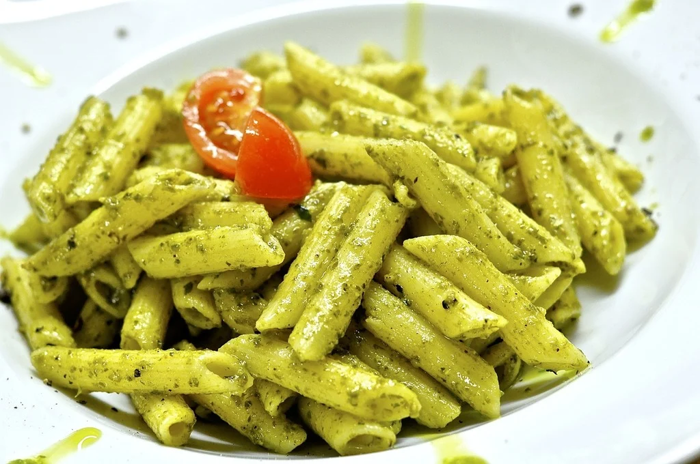

Home
Pesto Pasta

Description
Pesto pasta is a delicious and easy-to-make dish that combines the fresh flavors of basil, pine nuts, and Parmesan cheese with al dente pasta. This Italian classic is perfect for a quick weeknight dinner or a special occasion.
Ingredients
- 1 (16 ounce) package pasta
- 1 chicken, cut into pieces
- 1 onion, chopped and sliced
- 2 tablespoons minced garlic
- 2 tablespoons vinegar
- 2 tablespoons soy sauce
- 1 teaspoon black pepper
- 1 bay leaf
- 1 cup water
- Salt to taste
Steps
- Heat the vegetable oil in a large pan over medium heat.
- Add the chicken pieces and cook until they are browned on all sides.
- Remove the chicken from the pan and set it aside.
- In the same pan, add the onion and garlic and cook until the onion is translucent.
- Return the chicken to the pan.
- Add the vinegar, soy sauce, black pepper, bay leaf, and water.
- Bring the mixture to a boil, then reduce the heat to low and cover.
- Simmer for 30-40 minutes or until the chicken is tender.
- Remove the bay leaf and adjust the seasoning with salt if needed.
- Serve hot with rice.